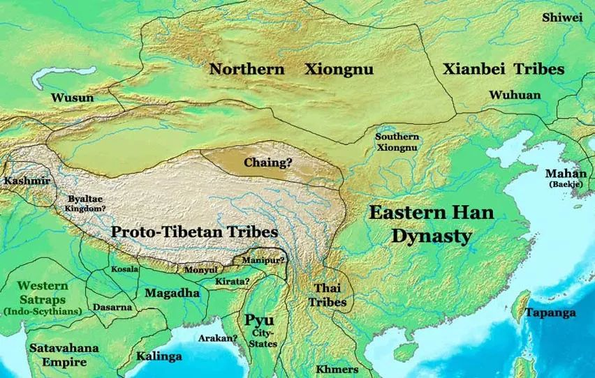
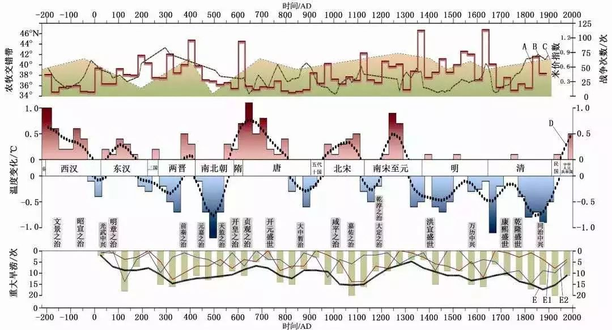
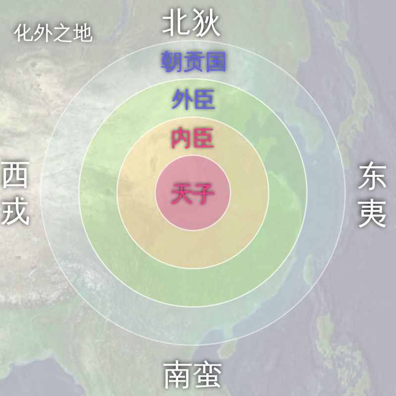
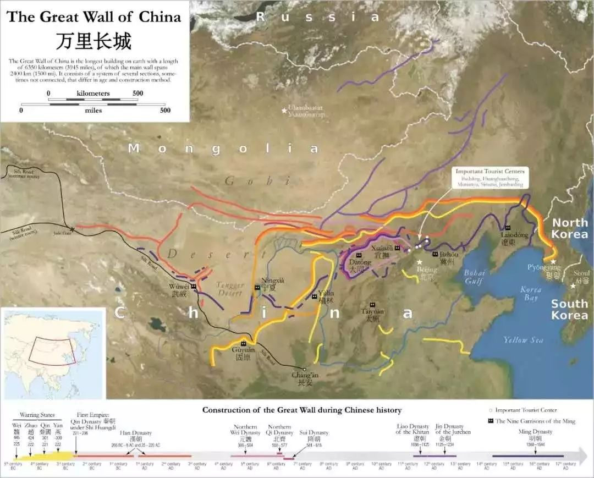
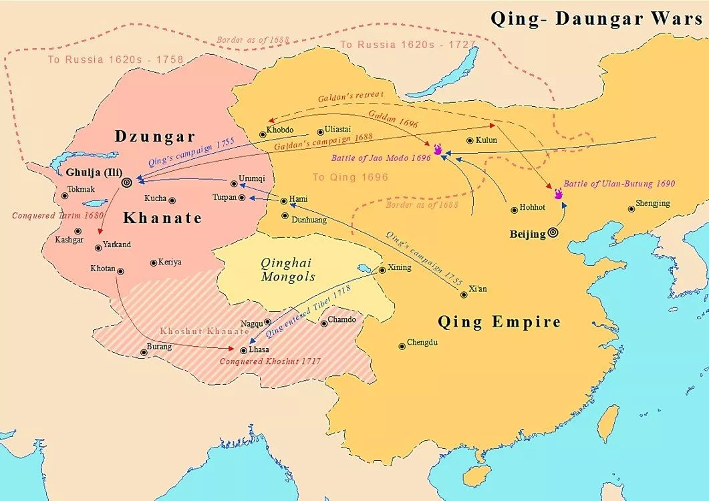

收录于合集
作者简介： 赵鼎新，芝加哥大学社会学系Max Palevsky讲席教授，浙江大学社会学系主任，人文高等研究院院长，研究兴趣为社会运动、民族主义、比较历史社会学、社会变迁与经济发展等。
众所周知，中国是个多民族国家，至今还存在一些少数民族问题，这与农业政体和草原政体几千年的冲突历史不乏关系。所谓“农业政体”和“草原政体”，便是指代惯称的“农业帝国”和“游牧部落”，前两个词更加中性、对称一些。
游牧民族对整个欧亚大陆都曾产生影响，但一些大型的游牧帝国主要出现在中国境内，比如匈奴，突厥等等。中国的游牧民族可以分为三类，一类是西部的羌人、藏人；一类是北部的蒙古人、鲜卑人；一类是居于东北，渔业和游牧混杂的满人、女真人、辽人等。历史上，羌人、藏人对中国的影响不大，仅仅出现在东汉和唐朝初期。北方蒙古帝国虽然军事力量强大，占领中国全境也不过几十年而已。 真正对中国产生影响的是东北人，即便他们的军事力量并不非常强大。
游牧民族与中原民族真正起冲突始于战国晚期。此前的戎人和狄人都是蒙满人，虽然他们是游牧民族，但不是骑在马上的民族。到公元前8世纪，由于培育的马越来越大，少数民族才慢慢开始骑马，成为“马背上的民族”。南宋时期，中国北方曾被多个游牧帝国控制。元朝和清朝的统治者在占领中国之前也是游牧或半游牧民族。
游牧民族虽然传入了很多新的历史和文化，但并没有根本改变中国儒法国家的政治结构。 历经千年历史， 中国游牧民族能始终在地缘政治竞争中保持活力，主要依靠三个结构性因素及相关机制。 包括气候条件、双方管理者的智慧，而更重要的是草原政体和农业政体在地理、生产方式、组织上的比较优势，他们相互学习模仿，以及在竞争中同化。 以下介绍决定竞争胜负的几大因素：
一、气候
纵观历史上游牧民族与中原民族间此消彼长的关系，不难发现气候条件的重要性。结合著名气象学家竺可桢重建的中国千年气候变化的规律来看， 每一段寒冷期，碰巧都有游牧民族移民或入侵中原。 如公元前1000-700年，猃狁、戎、狄进入中原。公元1000年后持续了较长一段寒冷期，游牧民族则不断进犯中原，导致西夏、金、元、清王朝的兴起。不过，公元1000年以前，游牧民族入侵带来长期战乱，而之后却只导致王朝的更替，可见东汉开始出现的儒法国家系统比较稳固。

西周垮台时，气候变冷导致游牧部落迁徙，到战国时期气候变化终止，双方的冲突开始减少。到魏晋南北朝，气候又变冷，再次导致游牧部落南迁，又与中原汉人发生大规模的战乱。汉朝时期， 匈奴帝国的衰弱不仅仅缘于汉武帝的军事胜利，也和其内部分裂以及气候恶化有关。 严冬时期，牛羊数十万计地死亡，经济上的严重损失逼迫南匈奴向汉朝投降，变成了半农业半游牧的形态。
**
**

游牧部落的活动与气候之所以密切相关，缘于气温下降对游牧民族的影响远胜于农业部落。 **第一，由于气温波动大，大部分草原牧民的农作物已经到了存活极限，即使很小的温度变化对作物也会产生很大的影响。 第二，游牧式生活对人口压力更敏感。**简单的马尔萨斯人口论并不适用游牧民族，对他们来说，牲畜既是投资也是食物。困难时期，部分牲畜充当食物，部分进行劳作，但由于饲料缺乏，可能连日常劳动、耕作都无法进行。游牧民族需要在马尔萨斯循环发生之前进行有效的人口控制，保证资源与人口的平衡。 第三，寒冷的气候不仅降低游牧民族的承载力，还会增加暴风雪等其他自然灾害发生的可能性。 灾难同样会迫使游牧民族南迁。
二、时机与领导人的智慧
气候变化仅仅描述了游牧部落活动的粗略轮廓，要解释其入侵的成功与失败，就要看影响农业政体和草原政体关系的第二个结构性因素——领导者的智慧。 中国的许多王朝都有游牧或半游牧血统，王朝疆土面积与统治家族的民族血统息息相关。即使已经统治中国多年，清朝皇帝仍然有强烈的欲望控制草原，因为其骨子里就一直企图征战亚洲内陆。而汉朝、宋朝、明朝等中原帝国的疆域则相对小一些。
**从西汉到清朝，中国一直是儒法国家。 除了儒学思想外，重视工具理性的法治也很有影响力。中国古代开国皇帝倾向于法治，很少受儒家思想的束缚。**由于他们通常靠战争获得王权，而且建国初期儒家官僚未正式建立，更倾向于用武力征服周边部落，因此中国历史上的远征军通常出现在王朝初期。
到了王朝的中期，不同血统的政体开始显现出区别。 农业政体一般靠封君、联姻、赐礼等来控制游牧民族。 其统治者对草原上的贫瘠之地兴趣不大，一方面出于安全考虑，一方面征战草原耗资巨大，一般国家很难支持。而更重要的是，中原血统的王君受儒家官僚的影响，更倾向于支配，而非武力夺取来处理外交关系。
继承了游牧血统的王朝君主，虽然有不同的视野及执政自主性，迟早也会被儒学统治意识同化，最后依靠儒家官僚体系。 尽管清朝统治者更又野心征服亚洲大陆，也更擅长对付游牧民族，但多数情况下，清朝依然延续了以费正清式“中国的世界秩序”作为意识形态之本的儒家外交政策。

**
**
除了领导者的智慧外，时机对于游牧部落的成功也很重要。 农业帝国向来非常稳定，即使受到游牧部落的打击也不至于崩溃。 **从历史上来看，游牧部落对农业帝国的绝对优势时期，也是汉人内乱程度较高的时期。 游牧部落往往趁此攻入中原，得胜率比较高。历史上农业政体的灭佛运动也为北方草原政体提供了进攻机会。**比如五代十国阶段，二者之间的冲突就很激烈，而且中原军队处于劣势。
三、比较优势
影响草原政体与农业政体之间关系的最重要因素，在于比较优势以及两类人群在竞争中的相互学习。这些因素的背后，蕴藏着很多复杂的机制。 草原政体擅长军事，农业政体的优势在于组织、文化、人口和积累。 历史的发展一直是二者相互学习的过程。
1、生产方式
一般的研究会用生产方式来解释游牧文明相对于农业文明的优势，现有的分析理论包括自然战士理论、贪婪理论、需求理论和解构理论。
我采用的研究方法是从 气候 入手分析。 降水量和温度会影响当地的生产方式、食物链和人口。 长城一带大致可以看作400毫米等降水量线，降水量低于400毫米的地区无法开展种植业，只能发展畜牧业。草原政体位于长城以北，以畜牧业为主；农业政体位于长城以南，以种植业为主。农业的差别会进一步影响到食物链。中原人吃草，游牧民族吃肉。食物链的原则是每高一层级，就需要十倍的能量。这意味着在两地同等肥沃的情况下，游牧部落承载的人口只是农业帝国的十分之一。更何况该地温度比较低，植物生长困难，恐怕连十分之一都不到。

两种政体在累积性方面也存在差异。农业政体通过投资和积累，技术和优势一点点开始展现，其增长方式是渐进式上扬。相比之下，游牧部落的发展趋势属于震荡徘徊。这样经过几千年的文明累积，农业政体渐渐赶超草原政体。
2、农业政体具有组织技术优势，游牧部落具有军事技术优势
农业政体的优势在于组织能力。 生产方式决定政体形式 ，农业政体的稳定性大，草原政体的流动性大。草 原政体只能采用部落制度，形成部落联盟，并根据部落之间的协调需要，产生符合当时实际情况的民主协定。 相比之下， 农业帝国的组织形式远超于游牧部落，可以组织常规军队和日常文官制度，这一点是草原政体达不到的。
草原政体拥有军事上的优势。西周晚期和春秋早期，戎狄非常厉害。这种情况迫使汉人发生改变，作战方式从以战车为主调整为以步兵为主。秦始皇的统一使汉人有能力攻击匈奴部落，各部落不得不联合起来以求对抗秦朝的攻击。但意想不到的是，刚建立帝国的匈奴见证了汉人的内乱——秦汉交替花了6年时间。这时候汉人发现自己输给了向汉人学习的匈奴帝国，于是汉朝人也开始学习匈奴人的行军征战方式。汉武帝时期，已经任用匈奴人来训练部队，霍去病也开始采用突袭方式作战。
同时，我们发现，伟大的游牧部落都集中出自东亚地区。这是因为中国帝国的强大， 游牧部落背靠着世界上最强大的农业政体，会通过学习形成游牧部落军事优势和农业文明组织优势的合体，从而提升自己的实力。
3、农业帝国的地域动态和边远地区统治机制
生产方式同时也决定战争的代价。 草原政体可以经常采取突袭战术，这是农业政体无法比拟的优势。草原政体可以在一个时间内集中打垮敌人的部队或者城楼，但农业政体的军队无法及时歼灭草原政体。
**首先，游牧军队移动太快，攻打对方没有好处，他们可以随时携带所有财富销声匿迹。 第二，虽然农业帝国可以出动大军，但最后部署在前线的不过数千人。**诸如汉朝经常派遣十万军队入境，但每前进至一地都需要留下部分兵力保障。所以一路下来，到最前线的也不过几千人。中原帝国维持补给和保障代价过大，使得游牧部落的战略迂回得以形成，他们可以纵深后退几百里，而农业帝国军队前进的脚步远远跟不上游牧部落。 同时，草原政体承受失败的能力远大于农业政体，农业帝国的军队一旦失败就彻底失去了进攻能力，而游牧军队即使失败了也可以继续向后撤退，然后趁其不备进行反击，往往便可大获全胜。
从游牧-农业政体冲突的视角看中国历史
**亚欧大陆上最强大的游牧帝国都出现在中国边境，例如匈奴、突厥、蒙古。 这可以用以上相互学习和模仿的分析来解释。**农业政体在其盛极之时非常强大，游牧部落统治者为了生存不得不努力地学习、适应。出奇强大的中原帝国系统，也启发了野心勃勃的游牧统治者去效仿。
游牧民族的军事力量再强大，也没有能力建立一个跨越长城内外的帝国（除了短暂的元朝）。历史上，反而是军事实力并不强大的东北部族在游牧民族与中原帝国的竞争中得利，并多次建立了持久的帝国，控制长城内外的人民。 东北部族很少处于游牧帝国与中原帝国的战争前线。 这种边缘地位也为他们提供了机会，同时吸收双方的优势。当其中一方衰弱或瓦解的时候，东北的王国就开始扩张。东北半游牧部落所处的夹缝位置，使其经常成为东北亚战争中出人意料的胜利者。
18世纪，清朝、俄国、准噶尔三大王国相互竞争。准葛尔能够与清王朝长期竞争吗？历史学家濮德培（Peter Perdue）给出了肯定答案，但我认为其机会微乎其微：一方面清朝经历过康乾盛世，中期发展很稳定，清朝能够在远离北京的边疆上攻击准噶尔，但其却无力回击。准葛尔面对的不再是明朝一样的敌人，而是游牧部落出身、并很有野心控制亚洲大陆的清王朝。另一方面准噶尔内部斗争不断，游牧帝国容易因领袖去世或者掠夺无力实现，产生内部争斗。准噶尔在清王朝盛极之时兴起，时机不对。最终噶尔丹失败，领土被中国和俄国瓜分。这个结果并非巧合，这皆由于在农业政体对抗草原政体的千年历史中，农业政体占据了组织和技术上的绝对优势。

注：
-
关于游牧政体和草原政体的详细论述请参见赵鼎新教授近著 The Confucian-Legalist State： A New Theory of Chinese History (Oxford University Press,2015)第11章Relations between Nomads and Settled Chinese in History部分。
-
本文部分使用图片来自微信公众号“历史研习社”文章《主导中国历史格局的两条分界线》（作者：杨照）。
编辑：杨端程